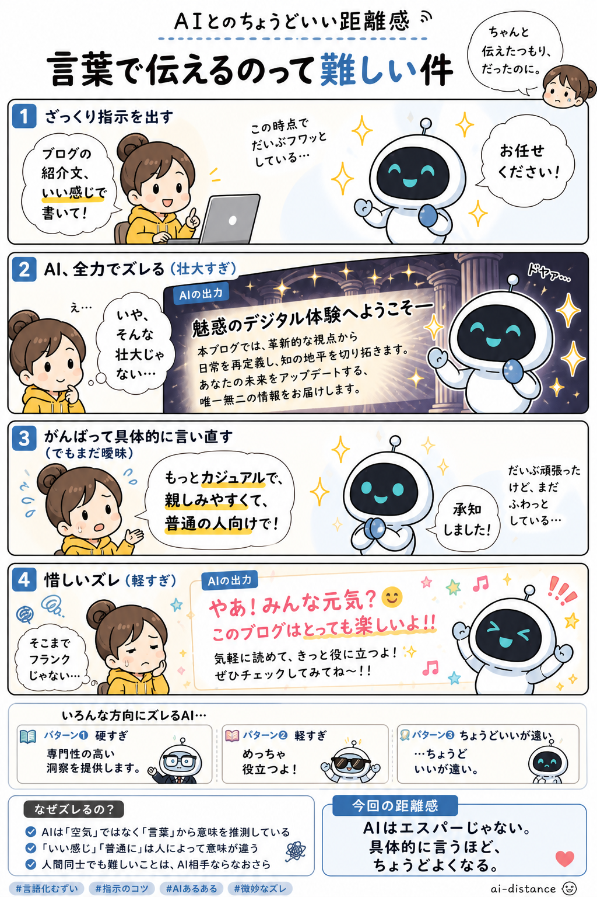

#002
言葉で伝えるのって難しい
AIに頼んだはずなのに、なんか思ってたのと違う。ある。

メモ
AIにお願いするとき、「いい感じにして」と言いたくなることがあります。
でも、その「いい感じ」は、人によってかなり違う。明るめなのか、短めなのか、ちゃんとして見える感じなのか。AIからすると、そこはけっこう広い海です。
これはAIが空気を読めないというより、そもそも言葉だけで頭の中を渡すのが難しい、という話かもしれません。人間同士でも、まあまあ起きます。
今回の距離感
AIには「いい感じ」だけでなく、「何を大事にしたいか」を少し添えると、だいぶ近くまで来てくれます。